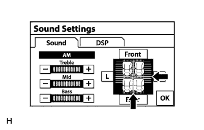

AUDIO AND VISUAL SYSTEM (w/ Multi-display) > Does not Play even after Bluetooth Audio Mode is Selected |
| 1.CHECK OPERATION |
Check if the portable player operates normally.
|
| ||||
| OK | |
| 2.CHECK AUDIO SETTINGS |
|  |
Enter the "Sound Settings" screen by pressing the "Sound" switch on the audio display.
Set volume, fader and balance to the initial values and check that sound is normal.
|
| ||||
| OK | |
| 3.CHECK USING ANOTHER "BLUETOOTH" AUDIO COMPATIBLE VEHICLE OF SAME MODEL |
Check if the "Bluetooth" audio player plays normally on another "Bluetooth" audio compatible vehicle of the same model.
|
| ||||
| OK | ||
| ||